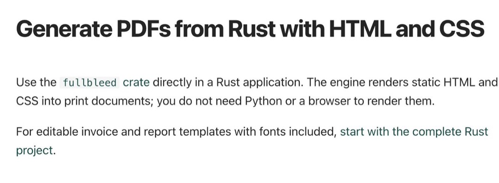
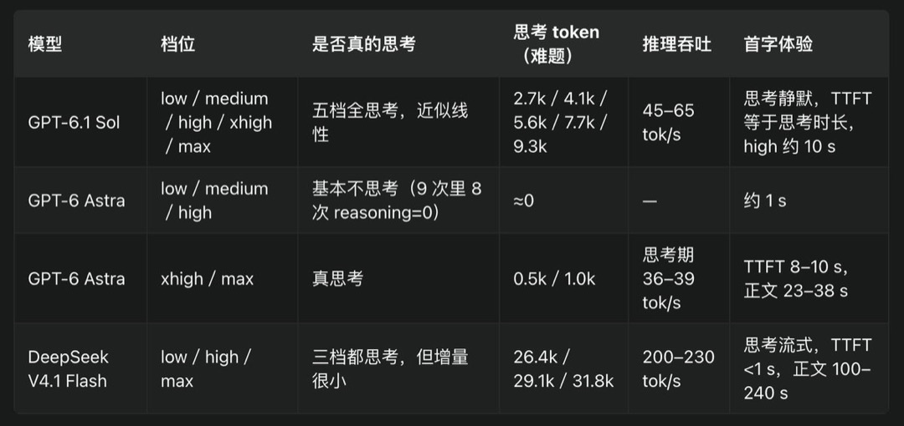
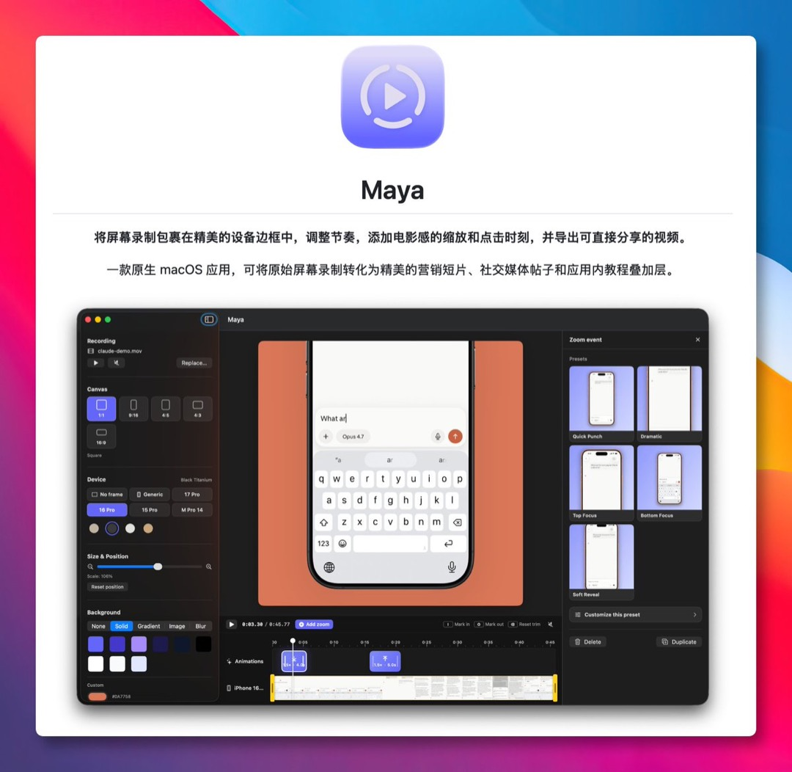
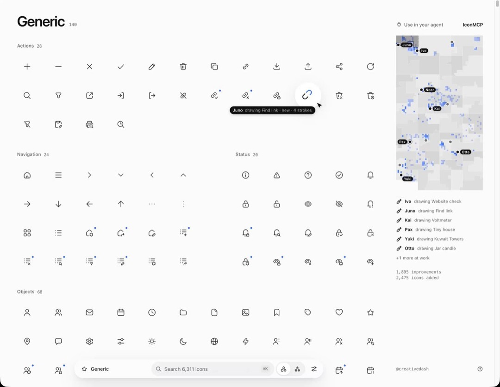
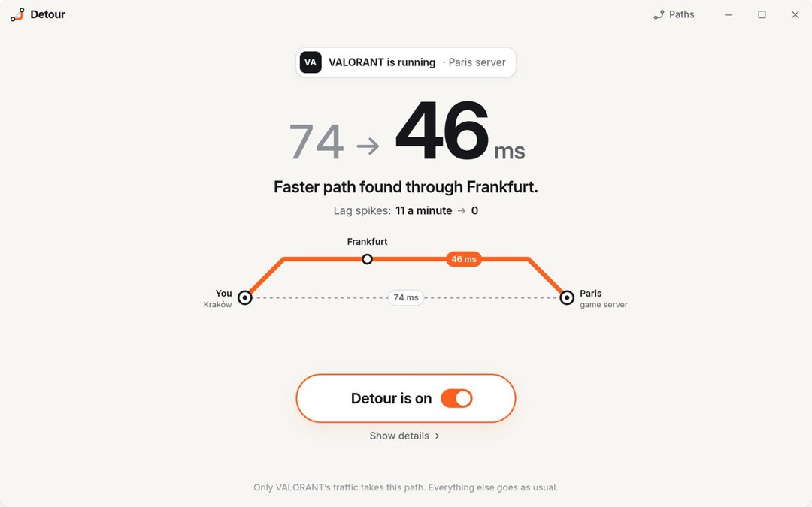
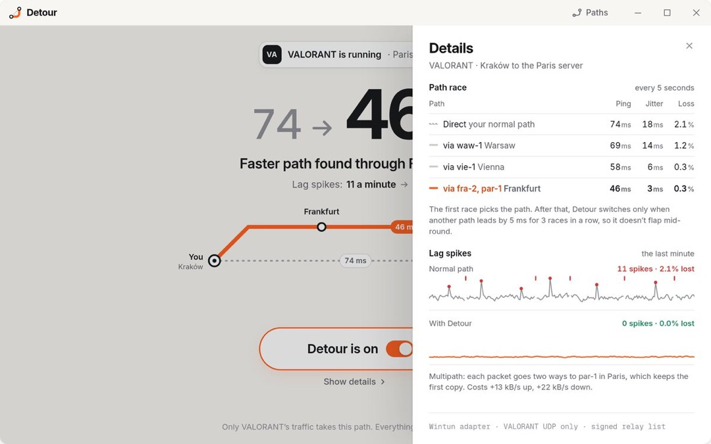
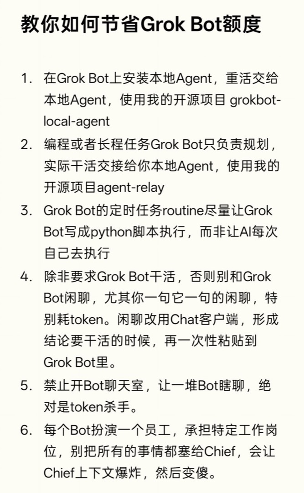

本期速览
01 多Agent编排返工率与模型档次无关
02 两周安全事件与开发环境防护清单
03 Fullbleed将HTML编译为PDF
04 GPT与DeepSeek思考档位实测选择
01｜多Agent编排返工率与模型档次无关
来源（X） · @ai_suxiaole · 2026-11-04 13:46
一个 Agent 负责规划，多个子 Agent 负责开发，完成后再 Review、测试、返工。整套流程下来，比单 Agent 多花两三倍时间，token消耗翻倍，效果也会更好。
实际使用需要区分场景
从 0 到 1 搭建项目，需要一次性开发多个模块，设计整体架构，多 Agent 可以分工协作，并行开发，推荐使用
日常开发修改一个 Bug，直接用单 Agent 会更高效。完
涉及数据库、等高风险修改，增加独立审核。
引用内容
Justin @interjc
烧了 Claude/Codex/Gemini 几个号的周额度以及数百刀 API，对一个 monorepo 项目进行了大改版
把全部委派记录翻出来做了一次复盘：
主 Agent 是 Claude Code，司机是 Opus 5.5 High，下游工具是 codex / agy 和 opencode（接了 Claude API 和 codex 小号）
内部子代理 300 多个，外部 agent 任务 200 多个（Codex、agy、OpenCode）
项目不小，有两个移动 App 加八个左右的 Cloudflare Workers 服务，做了 SDK 升级、鉴权收拢、预付积分计费、AI 网关和界面改版。主会话由 Opus 5.5 当总监，负责拆任务、写契约、验收和提交，其余的活都派出去
最意外的发现是，外部 agent 最划算的用法不是写代码，而是评审。我让 Codex 的 gpt-6.1-sol 用 high 只读评审计费和鉴权代码，7 次全都找到了真问题：扣了费却没返回结果、重复扣费、借内部令牌读到别人的数据。换一家厂商的模型来看，正好能补上自家模型的盲区。内部评审也很值：72 次里有 21 次提出阻塞问题，几乎全被实现方确认，误报只有 1 条
第二个发现是，返工多少看任务风险，不看模型档次。Opus 和 Sonnet 写的代码，经评审后需要返工的比例都是 67%。只要碰到钱、鉴权、表结构，谁写都得过几轮评审，所以与其换更贵的模型，不如一开始就把评审轮次排进工期
effort 也不是越高越好：Opus 开 xhigh，每个任务中位 19 分钟、3.7 到 11.5 美元，评审照样每次都挑出该修的问题；Sonnet 用 medium 做小而明确的改动，大约一分钟，几分钱到一美元多
还有一个容易被忽略的角色是「联络员」。每个外部任务都配一个 Haiku low 的子代理，负责派活、等结果、跑验收、核对改动范围，绝大多数顺利完成
外部 agent 经常因为沙箱限制跑不了测试，真正把关的是这一层。外部任务的几次失败也都出在环境上（effort 设置被重置、沙箱拒绝、超时），没有一个改了范围之外的文件，也没有一份结果需要扔掉重做
总结一下我的分工：
低档模型当联络员；
中档模型做明确的小改动和调研；
强模型做有风险的实现；
顶级模型和另一家厂商的强模型负责评审；
02｜两周安全事件与开发环境防护清单
来源（X） · @chenchengpro · 2026-11-04 13:03
作者是 Jack Cable，Cognition 安全产品负责人，前 CISA、Corridor。总结最近两周的安全事件，再给一份「马上做」和「30 天内做」的清单。
1/ 两周里发生的事：
- Binance 被盗 63.4 亿美元，有记录以来最大的盗窃案，FBI 归因朝鲜。起点是开发者机器：几个工程师的笔记本通过假面试和被篡改的安装包中招，其中一台上有部署 token，能直接摸到钱包签名服务。
- Cursor 上的 Claude Code 扩展被投毒（10/29 披露），恶意版本会装持久后门，让攻击者能 SSH 进开发者机器。扩展自动更新，用户什么都不用做就会中招，不到 5,000 人装了。恶意版本和 Open VSX 上的不一致，说明是 Open VSX 下游的发布流程被攻破了。
- PHP2Shell：PHP 运行时的内存安全漏洞，某些配置下一个未认证请求就能在应用代码执行前触发，几个国家的政府网站直接下线。
- 还有 GitLab 未认证 RCE；一批 VPN、防火墙等边界设备漏洞；CA eMudhra 的私钥被设成数字 4；KVM 虚拟机逃逸（Vercel Sandbox 赏金计划发现）；Linux MPTCP 远程提权 CVE-2026-98432，Go 1.24+ 默认开启 MPTCP。
2/ 公司环境。马上做：高风险账号（Google Workspace、GitHub、云厂商、IdP）上 passkey 或硬件密钥这类防钓鱼 MFA，并且只允许受管设备登录；让 coding agent 扫一遍对外暴露面；全员用密码管理器；全员装广告拦截（如 uBlock Origin），Binance 的链条就是从搜 AI 编程工具点进恶意广告下载开始的。30 天内：所有设备上 MDM + EDR；浏览器和编辑器扩展走白名单，并设置自动更新延迟；按「一台开发机被攻破」这类场景审一遍整个攻击面，保证单台设备进不了生产。
3/ 开发环境。这是全文重点。开发机上跑着大量第三方代码：依赖包、编辑器扩展、MCP server，现在还有能自己执行命令的本地 agent。任何一个被攻破，攻击者就继承了这个开发者能碰到的一切。马上做：用 TruffleHog 扫开发机上的密钥（home 目录、shell 历史、.env）；盘点团队装的扩展、插件、MCP server，重点看能碰文件系统、shell、凭证的。30 天内：密钥全部迁到 secrets manager 并轮换；转向云端 coding agent 和远程开发环境，把会出事的东西整个移出笔记本。
4/ 代码。马上做：用前沿模型扫代码库和关键开源依赖，从对外服务、认证、支付开始；Docker 镜像和构建产物也要扫密钥。30 天内：规划大规模重构，比如迁到内存安全语言、全面改用参数化查询；扫描时把威胁模型告诉 harness（怎么部署、哪些对外、最该保护什么），通用 prompt 噪音太大。
5/ 依赖。马上做：npm、PyPI 等设置最小包龄至少 7 天，在包管理器配置或前置代理里做都行，蠕虫式投毒（如 Shai-Hulud）基本在这个窗口内就会被发现下架；锁版本、提交 lockfile，CI 从 lockfile 装。30 天内：清理不用的依赖，看紧没人维护的。
6/ 监控。确认需要的日志真的存在（IdP 登录、云审计、源码和 CI 活动、生产数据访问），并且放在拿到生产权限的攻击者也删不掉的地方；对新增管理员、MFA 变更、新设备或新地点登录、大量数据导出、异常读取密钥这些事件告警。
原文 https://x.com/jackhcable/status/2117731409246978489
博客版 https://cognition.com/blog/practical-guide-to-security-november-2026
相关调研 https://research.sorrycc.dev/@sorrycc/2026-10-security-incidents
引用内容
Jack Cable @jackhcable
中文译文
过去几周对安全领域来说相当艰难。
我整理了一份指南，列出你现在就能采取的最具影响力的行动：https://x.com/i/article/2117718998024654849
原文
It's been a rough few weeks for security.
I pulled together a guide of the highest-impact actions you can take today: https://x.com/i/article/2117718998024654849
03｜Fullbleed将HTML编译为PDF
来源（X） · @mylifcc · 2026-11-04 12:01
没有浏览器内核，没有僵尸进程，核心思路就一句话：直接用原生 Rust 把 HTML/CSS 编译成 PDF。🧵👇

04｜GPT与DeepSeek思考档位实测选择
来源（X） · @fankaishuoai · 2026-11-04 11:53
用GPT 模型应该开什么思考档位，用DeepSeek 应该开什么思考档位？为什么 Astra 不开xhigh等于没开？
我对自己常用的AI 模型： GPT-6 Astra， GPT-6.1 Sol， DeepSeek V4.1 Flash，分别测试了他们的思考档位，总结了最佳实践：
1. 简单任务用 DeepSeek High，不用开Max，开了也不会更聪明，还浪费token浪费等待时间。
2. 复杂任务用 GPT-6.1 Sol High，最佳性价比，再开大也没意义了。
3. 超级复杂任务用 GPT-6 Astra，必开 xhigh/max。
BTW，我发现一个有趣的现象：
GPT-6 Astra会自我调整思考程度，简单任务 low/medium/high 很可能根本不思考。要让Astra真干活，必须开 xhigh/max，进行强制思考。

05｜Maya开源录屏加设备外框与局部放大
来源（X） · @GitHub_Daily · 2026-11-04 13:30
Maya 是一款开源的 Mac 应用，拖入录屏就能套上 iPhone、iPad 或 MacBook 外框，调整背景，再加局部放大和点击提示。
视频中间等待的部分可以加速，操作细节可以慢放，速度范围从 0.25 倍到 4 倍。放大位置和持续时间都能在时间线上拖动调整。
GitHub：https://github.com/ronaldo-avalos/Maya
点击提示有波纹、脉冲、圆环 3 种样式，我觉得做操作教程时很有用，观众能看清刚才点的是哪里。
背景可以选纯色、渐变、图片，也能用录屏本身做模糊背景。方形、竖屏和横屏画布都支持，方便做不同平台的演示片。
有现成安装包，能导出 MP4，也能导出透明背景的 MOV，继续放到其他视频里合成。

06｜12个Agent实时绘制十万图标库
来源（X） · @sundyme · 2026-11-04 13:20
值得一说的是，这些图标的设计水准还是很高的，MIT开放授权，可以免费商用，而且页面上也提供了丰富的样式自定义选项，还可以把项目接入你自己agent，做项目的时候直接调用。

07｜Rust工具将游戏流量走Wintun网卡
来源（X） · @QingQ77 · 2026-11-04 13:13
https://github.com/ShineFinancialStrut/game-server-route-racer


08｜Grok Bot用本地Agent节省额度
来源（X） · @fankaishuoai · 2026-11-04 12:43
1. 在Grok Bot上安装本地Agent，重活交给本地Agent，使用我的开源项目 grokbot-local-agent
2. 编程或者长程任务Grok Bot只负责规划，实际干活交接给你本地Agent，使用我的开源项目agent-relay
3. Grok Bot的定时任务routine尽量让Grok Bot写成python脚本执行，而非让AI每次自己去执行
4. 除非要求Grok Bot干活，否则别和Grok Bot闲聊，尤其你一句它一句的闲聊，特别耗token。闲聊改用Chat客户端，形成结论要干活的时候，再一次性粘贴到Grok Bot里。
5. 禁止开Bot聊天室，让一堆Bot瞎聊，绝对是token杀手。
6. 每个Bot扮演一个员工，承担特定工作岗位，别把所有的事情都塞给Chief，会让Chief上下文爆炸，然后变傻。
